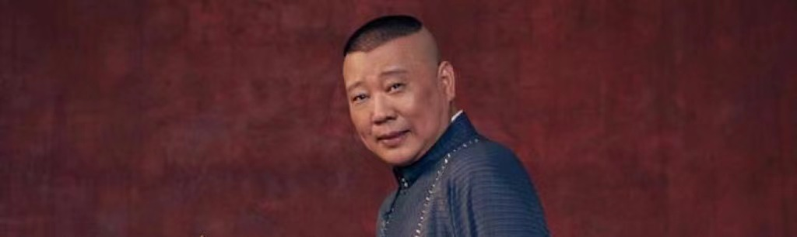

Born on January 18, 1973 in Hongqiao District, Tianjin CityGuo Degang, born on January 18, 1973 in Tianjin, China, with ancestral roots in Shanxi Province, China, is a mainland Chinese crosstalk actor, director, screenwriter, singer, actor, host, and founder of Beijing Deyun Society.